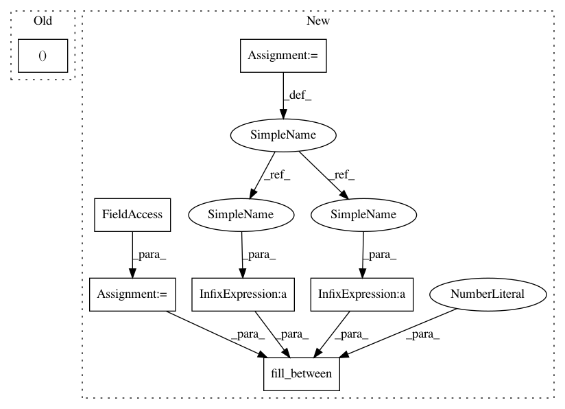

b71a65e0a314ecd6e17d18a70db4b4177a43d5ed,cde/evaluation/GoodnessOfFitResults.py,GoodnessOfFitResults,plot_metric,#GoodnessOfFitResults#Any#Any#Any#,46
Before Change
sub_df = self.results_df.loc[(self.results_df[list(graph_dict)] == pd.Series(graph_dict)).all(axis=1)]
metric_values = sub_df[metric]
n_obs = sub_df.loc[:, "n_observations"]
" visual settings "
c = next(color)
After Change
sub_df = self.results_df.loc[(self.results_df[list(graph_dict)] == pd.Series(graph_dict)).all(axis=1)]
metric_values_mean = sub_df.groupby(by="n_observations").mean()[metric]
metric_values_std = sub_df.groupby(by="n_observations").std()[metric]
n_obs = metric_values_mean.index
" visual settings "
c = next(color)
label = graph_dict["estimator"] + "_x_noise_" + str(graph_dict["x_noise_std"]) + "_y_noise_" + str(graph_dict["y_noise_std"])
plt.plot(n_obs, metric_values_mean, color=c, label=label)
plt.fill_between(n_obs, metric_values_mean - metric_values_std, metric_values_mean + metric_values_std, alpha=0.2, color=c)
plt.xscale("log")
plt.xlabel("n_observations")
plt.ylabel(metric)
In pattern: SUPERPATTERN
Frequency: 3
Non-data size: 7
Instances
Project Name: freelunchtheorem/Conditional_Density_Estimation
Commit Name: b71a65e0a314ecd6e17d18a70db4b4177a43d5ed
Time: 2018-03-30
Author: jonas.rothfuss@gmx.de
File Name: cde/evaluation/GoodnessOfFitResults.py
Class Name: GoodnessOfFitResults
Method Name: plot_metric
Project Name: datascienceinc/Skater
Commit Name: e8b2e17f4eec658f6a6d53486dbbe3eac48bb0fa
Time: 2017-03-30
Author: aikramer2@gmail.com
File Name: pyinterpret/core/global_interpretation/partial_dependence.py
Class Name: PartialDependence
Method Name: _plot_2d_2_binary_feature
Project Name: freelunchtheorem/Conditional_Density_Estimation
Commit Name: b71a65e0a314ecd6e17d18a70db4b4177a43d5ed
Time: 2018-03-30
Author: jonas.rothfuss@gmx.de
File Name: cde/evaluation/GoodnessOfFitResults.py
Class Name: GoodnessOfFitResults
Method Name: plot_metric
Project Name: datascienceinc/Skater
Commit Name: e8b2e17f4eec658f6a6d53486dbbe3eac48bb0fa
Time: 2017-03-30
Author: aikramer2@gmail.com
File Name: pyinterpret/core/global_interpretation/partial_dependence.py
Class Name: PartialDependence
Method Name: _plot_2d_1_binary_feature_and_1_continuous